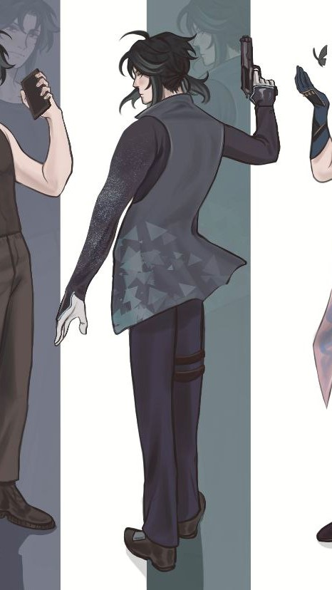
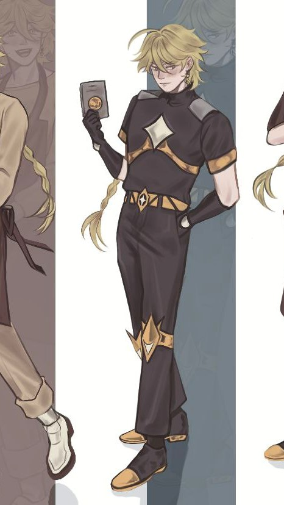

ДОМАШНЯЯ СТРАНИЦА
ГЛАВНЫЕ ПЕРСОНАЖИ
СЯО XI800

ДАТА СОЗДАНИЯ: 9.11.2038
Сяо - модель-прототип, созданная Компанией "Киберлайф" и подаренная Альбедо Камски своему другу, капитану главного департамента Детройта Чжун Ли.
Его изначальная задача- помогать В проведении расследований, используя свои технические возможности. В него также встроен специальный модуль, который специально разработан с целью создать «идеального напарника», способного интегрироваться в любую команду. Модель оснащена программным пакетом
физического моделирования, основанным на анализе элементов места преступления. Благодаря этому Сяо может
реконструировать события, сопоставляя имеющиеся улики. Кроме того, это первая модель, способная проводить анализ биологических материалов в реальном времени посредством пероральной пробы образцов.
ИТЭР АНДЕРСОН

ДЕНЬ РОЖДЕНИЯ: 3.05.2013
Итэр - талантливый, но крайне вспыльчивый лейтенант департамента полиции Детройта. Несмотря на то, что Итэр ненавидит андроидов, был назначен капитаном Чжун Ли для расследования дел, в которых фигурируют девианты. В то же время к нему был приставлен андроид-детектив Сяо, присланный из Киберлайф. Лейтенант с отличием окончил полицейскую академию, быстро прославился храбростью и умом, раскрыв ряд сложных дел, в том числе и дело о "Красном льде". Быстро повысился до лейтенанта, став самым молодым из тех, кто когда-либо занимал эту должность в Детройте.
ВТОРОСТЕПЕННЫЕ ПЕРСОНАЖИ
АЛЬБЕДО КАМСКИ
ДЕНЬ РОЖДЕНИЯ: 13.09.2000
Ученый и главный директор Киберлайф. Первый, кто создал человекоподобного робота, который смог пройти тест Тьюринга. Сделал множество открытий в роботехнике, внедрив технологии ИИ во все сферы жизни общества.
ВЕНТИ ДЭВИС
ДЕНЬ РОЖДЕНИЯ: 16.06.2010
Бармен бара "Доля Ангелов". Веселый и легкомысленный парень, готовый выслушать ваши истории за бокалом вина... Или он все-таки не настолько беззаботный, каким хочет казаться?
КАЭДЭХАРА КАДЗУХА
ДАТА РОЖДЕНИЯ: 29.10.2012
Офицер департамента полиции Детройта, мастер роботехники. Окончил Токийский университет в 2032 году. Обладает спокойным и непоколебимым характером, нкито даже представить себе не может, что может разозлить этого парня.
ХЭЙДЗО HR400
ДАТА СОЗДАНИЯ: 24.07.2030
ИНФОРМАЦИЯ В АРХИВАХ ДЕПАРТАМЕНТА ДЕТРОЙТА НЕ НАЙДЕНА
ЛЮМИН АНДЕРСОН
ДАТА РОЖДЕНИЯ: 20.07.2016 ДАТА СМЕРТИ 09.11.2036
Главный танцор хореографического ансамбля "Интейват", актриса. Младшая сестра Итэра Андерсона, яркая звезда американских танцевальных программ. К сожалению, стала жертвой одного из андроидов во время "Смертоносной ошибки"